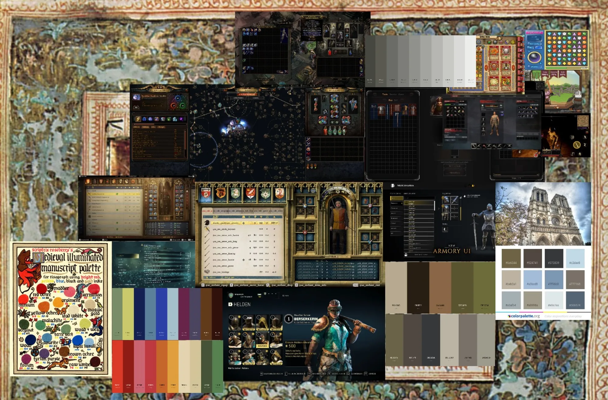
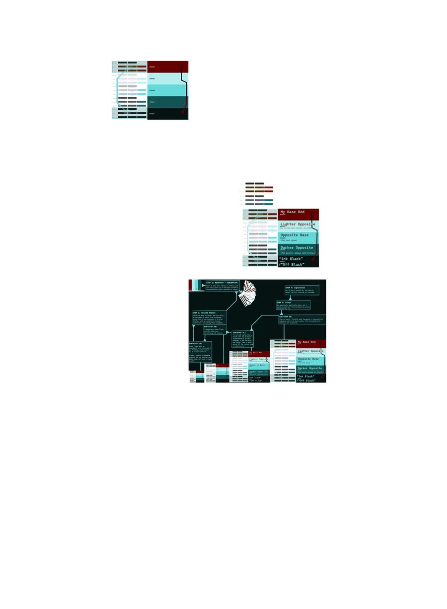
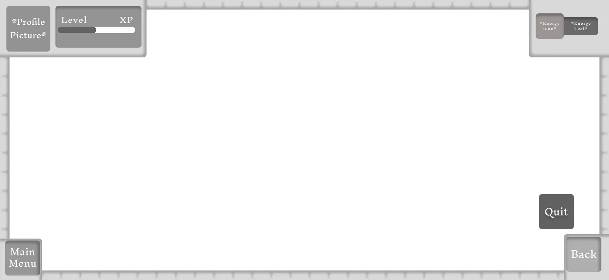
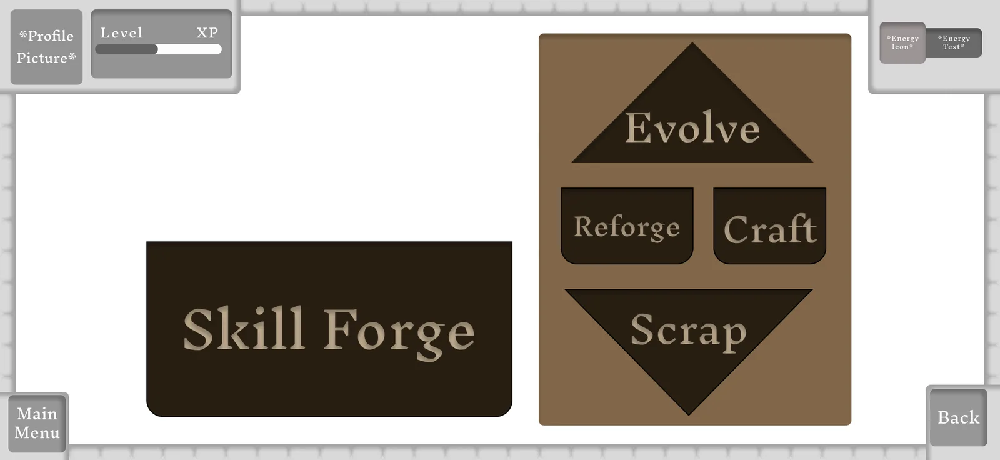
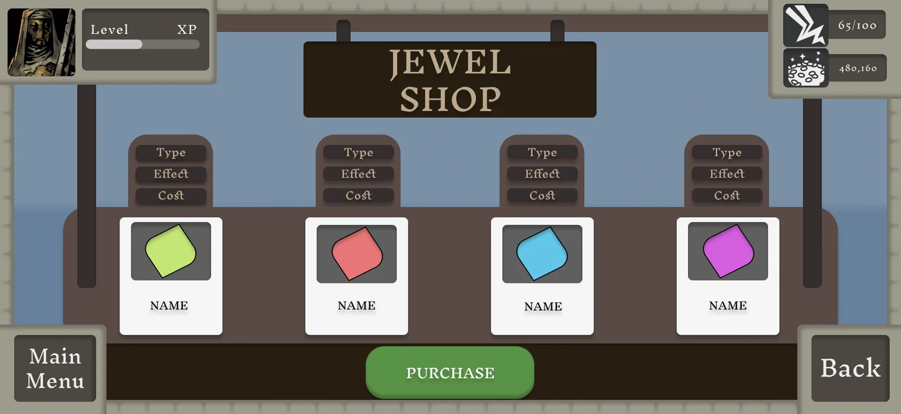
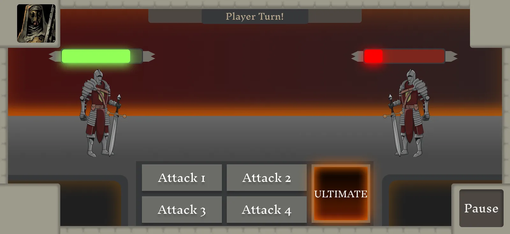

I'm a game designer at DigiPen specializing in UI/UX and level design. I care about the moment a player looks at a screen and simply knows what to do.
I've interned at Treyarch, I bring deep Unreal Blueprint knowledge to teams of C++ programmers, and I've led student teams as a producer. Right now I'm Creative Director and UI/UX designer on Nitro Guzzler, a 31-person racing game shipping on Steam in December 2026.
FocusGame UI/UX, HUDs, menus, style guides
AlsoLevel design, team leadership
ExperienceTreyarch internship · Nitro Guzzler (CD, UI/UX) · Game design instructor, DigiPen Open World
SchoolDigiPen Institute of Technology
Software I'm proficient in
Fi
FigmaUI design
Ue
Unreal EngineEngine · Blueprints
Un
UnityEngine
Ma
Maya3D
Kr
Krita2D art
Contact
Let's make something readable.
Hiring for UI/UX, or want to talk menus and HUDs? I answer email fastest.
I built a style guide from a moodboard, then used it to design a complete, working UI for a dark-fantasy jewel game: main menu, shop, crafting and combat.
Role
UI/UX designer
Course
DES 360
Tools
Figma
Deliverables
Moodboard, palette, frame, 5 screens
Step 1 · Research
It started as a wall of references
I collected inventory and armory screens from dark-fantasy RPGs, a medieval strategy game's ledger UI, a jewel-matching puzzler, Gothic cathedral stonework and a medieval illuminated-manuscript ink palette, all laid over a woven tapestry.

The moodboard. Dark game menus set the structure; the manuscript inks and tapestry set the color.
Step 2 · Style guide
A palette pulled straight from the board
Every color in the UI comes from the moodboard: a warm grey ramp for structure, earth tones for surfaces and type, and manuscript jewel tones held back for the jewels themselves.
Click a swatch to copy its hex code.

The full palette sheet from the style guide.
Step 3 · Greybox
One frame for every screen
Before any art, I locked a shared frame. Player state sits in the top corners, navigation sits in the bottom corners, and the center belongs to whatever the screen is for. Every later screen is built inside this frame, so players never relearn where things are.

Art passGreybox frame

Skill Forge first pass. Shape carries meaning: Evolve points up, Scrap points down, and Reforge and Craft sit level between them.
Step 4 · Art pass
Reading the main menu
Tap the numbered pins to see why each part sits where it does.
01Who you arePortrait, level and XP stay pinned top left on every screen.
02What you haveEnergy and coins stay top right, so spending decisions are always informed.
03One obvious next stepCampaign is the only large button, framed by its own panel.
04Everything else, equalShops, Crafting, Book of Chains, Rewards and Quit share one row and one size.
05Out of the wayAudio and settings live in the corners, reachable but never competing.
Step 5 · Screens
The same frame, different jobs

Jewel Shop. Each item shows Type, Effect and Cost in the same order, and there is a single Purchase action.

Battle. A turn banner, mirrored health bars, four attacks and an Ultimate that glows so it reads as special.
Reflection
What I'd do next
Two or three sentences in your voice: what playtests or critique told you, and what you would change in a second pass.
A Redline-inspired portal racing game where the main menu is a 3D world, not a screen. As Creative Director and UI/UX designer, I created or directed all of the game's UI, from concept to implementation.
Role
Creative Director, UI/UX
Team
31 · the Grease Monkeys
Engine
Unreal Engine 5.5
Release
Steam, Dec 2026
The goal
Make the menu part of the world
Most menus are a layer on top of the game. I wanted ours to be the game. I took the approach of the Batman: Arkham menus: the camera cycles through shots on its own, pulls the player in and introduces the characters before the first race.
Racers up frontThe racers are the main reason players get invested, so the menu is built around them.
The menu is the attract loopA camera director hard cuts between sequences. The camera never blends. Only the content moves.
Names that fit the worldEvery destination has a garage-culture name instead of a generic one.
Intro
One white void for everything
The intro and the menu share the same white space, with no separate garage hub level. Cars race through it in their livery colors and leave colored tire stripes. They smash through a glass pane carrying the logo and switch to their in-game textures, then the camera falls to show the team name written in tire tracks.
01IntroPlays once. Hold a button to skip.
02Ready loopWaits for the player.
03Any keyWakes the menu.
04Main menu loopThe attract loop takes over.
Intro capture goes here: livery-colored cars before the glass pane, in-game textures after
Menu map
Spray-painted arrows instead of a button list
The root options are arrows painted on the ground in a compass layout. Pick a direction to see where it leads.
W-Dawg
Play
Prep Ride
A splash panel with high scores, a highlight clip, the game name and team name. Then Racer Select, then two flash transitions: one into the track intro and one into the race start.
Quitting is themed too. It opens a "Racer Retiring" confirmation instead of a generic quit dialog.
Settings
Settings scratched into the paint
In the Garage, settings are physical hotspots on W-Dawg's car. One Return button sits on the ground, visible as the camera whips around the car. A dedicated artist is making the etched decal art.
HoodVisualDisplay settings such as monitor size.
SideAccessibility + gameplayToggles like turning the HUD on or off.
Open trunkAudioVolume for each type of sound.
The other destinations use a second interaction type: flat holographic overlays you step through with Next and Return. Racer Select shows the racer's face, info, track record and a lore bit, and adds Confirm to lock them in. Pit Crew is a looping character sheet that cycles through every racer.
Before/after goes here: W-Dawg's bare hood vs. the hood with Visual settings etched in
Implementation
How it's built
One camera directorA single Blueprint holds every menu destination as a row of data. Each row stores where Back goes, so there's no special-case back logic.
Structs over a Data TableData Tables fight with references to actors placed in the level, so destinations are an array of structs.
Hierarchy by tagEach destination has a parent tag. Garage's three hotspots are just three more rows tagged Garage.
Widgets on surfacesUMG widgets sit on 3D surfaces as Widget Components. They're physically separate but navigate as one screen.
One activation pathMouse clicks hit the UI through a raycast. Gamepad and keyboard step through an ordered list. Both call the same function.
Back plays in reverseEach destination sequence plays once and holds its last frame. Back plays it in reverse, reusing the game's rewind component.
I originally planned a blended moving camera and a 2D widget stack. Once the real design was clear, with hard-cut sequences and buttons on 3D surfaces, I rewrote the implementation plan around it. The Sequencer intro and the hand-off into the attract loop are done in engine.
Trailer
The trailer
I planned the trailer around the structure of the Need for Speed: Most Wanted trailer, but swapped its car showcase for W-Dawg drifting through our menus and intro. I wrote the shot lists and an artist produced the shots.
Trailer goes here: W-Dawg drifts through Nitro Guzzler's main menu and intro
Leadership
Directing a 31-person team
I turned the menu and intro concept into a written game plan, a shot list and an Unreal Engine 5.5 implementation guide for the team. I direct artists from my shot lists and work closely with the design lead on team management.
Captures of the old and new menu, the UI's real colors and fonts, and any playtest feedback.
The player is a robot, so the HUD is part of the robot: a hologram projected into 3D world space, not a flat overlay on the screen.
Focus
Diegetic HUD
Engine
Unreal Engine
References
Radar, aviation, green phosphor CRT
Module layout
A HUD built from modules, like an OS
Sunrise moduleUpper left. Tracks the six moons as they rise.
Hunt bannerTop center. Time since the last hunt.
Clock + view directionUpper right. Mission clock and heading.
3D crosshairCenter, with a floating distance readout.
Laser rangefinderCenter right. Ticks at 5, 10, 15, 25 and 50 m, intersecting the world like a construction laser.
Status + spearLower left and lower right.
HUD capture or sketch goes here
Behavior
A HUD that breathes
The crosshair widens after a miss and tightens when ready, with a slight throb that humanizes the robot. Modules fade in and out with context instead of staying on all the time, and the hologram shifts between light and dark green.
Build
In engine
One master hologram material drives ring masks, radial ticks and layered opacity. A HUD rig Blueprint with four anchors is parented to the camera.